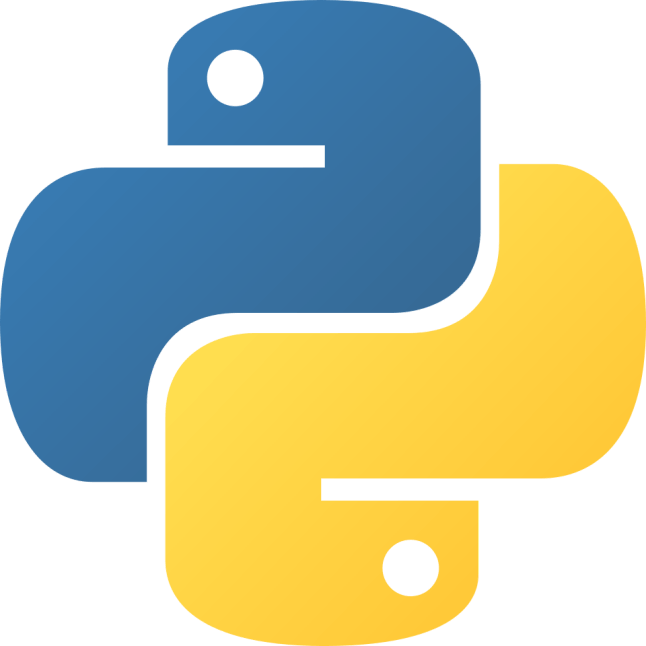
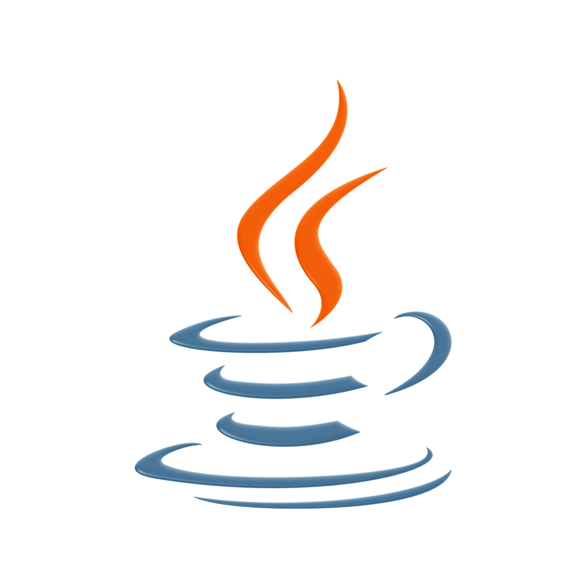

# Computer Science Student
James builds reliable software and explores real-world networks.
B.S. Computer Science student at Saginaw Valley State University with a 3.92 GPA, hands-on experience in tutoring, full-stack development, and networking infrastructure.
Currently tutoring CS students and building scalable student projects.
"I like turning coursework into software that is useful, fast, and actually deployable."
- Built from James's recent academic and project work
#about
James Radomski is an undergraduate computer science student at Saginaw Valley State University in University Center, Michigan. His work sits at the intersection of application development, backend systems, and networking fundamentals.
He enjoys building software that feels practical: web apps with clean data flow, Java projects designed for extension, and networking experiments that make protocols and infrastructure easier to understand.
#education
Saginaw Valley State University
B.S. in Computer Science
University Center, MI
Expected May 2027
GPA 3.92
President's List: Fall 2022, Winter and Fall 2023, Winter 2025
Dean's List: Winter and Fall 2024
Relevant Coursework
Academic Focus
- Full-Stack Web App Development with Node.js, Express, MySQL, REST APIs, and database integration
- Data Structures with algorithmic problem solving and performance-minded implementation
- Advanced Java Programming with object-oriented design for larger software systems
- Computer Networking with routers, switches, VLAN configuration, and network fundamentals
#projects
Java / REST API / SQLite / Google Cloud
sol-lexical-analyzer
A Java-based service focused on performance and maintainability, featuring an SQLite cache that reduced response times by up to 95% and a codebase structured for future plugin support.
- Implemented caching to improve speed and scalability
- Used object-oriented design patterns for extensibility
- Deployed and maintained the service on Google Cloud Compute Engine
MQTT / Python / TCP-IP / Networking
mqtt-network-temperature
A publish-subscribe networking project built to explore sensor-style communication, protocol behavior, and measurable tradeoffs between MQTT and lower-level TCP/IP approaches.
- Designed clients and broker communication around temperature data
- Demonstrated message-oriented networking concepts in practice
- Compared latency and telemetry against an alternate TCP/IP implementation
#experience
February 2023 - Present
Game Design Club Treasurer and President
Saginaw Valley State University
- Coordinates meetings with faculty and students across schedules, spaces, and event needs
- Teaches underclassmen lessons on game design and development
- Builds leadership and communication through student organization planning
September 2025 - Present
Vice President
SVSU ACM Chapter
- Supports scheduling, announcements, and outreach for chapter events and activities
- Helped support a joint Game Jam with the Game Design Club
- Taught foundational game design and development lessons to prepare members for project work
October 2025 - Present
Academic Tutor
SVSU Computer Science Department / University Center, MI
- Tutors undergraduate students in core computer science concepts through guided practice and debugging support
- Explains programming topics clearly to students with different experience levels
- Helps students review assignments and prepare for exams with structured problem-solving
#skills


Programming
Java, Python, JavaScript, TypeScript, C#, HTML, CSS, SQL
Frameworks & Tools
Node.js, Express.js, Express-Handlebars, SQLite, MongoDB, Git, GitHub, Gradle, Google Cloud
Networking
Routers and switches, VLANs, routing, BGP, TCP/IP, MQTT
Platforms & Software
Windows, Linux, Cisco IOS, JetBrains IDEs, Microsoft Word, Excel, PowerPoint, VSCode
Strengths
Organization, collaboration, communication, problem-solving, adaptability, leadership
#contact
Let's connect